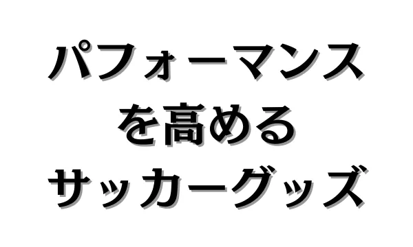
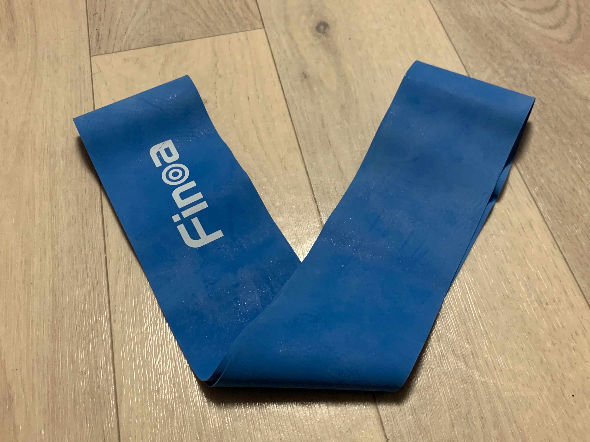
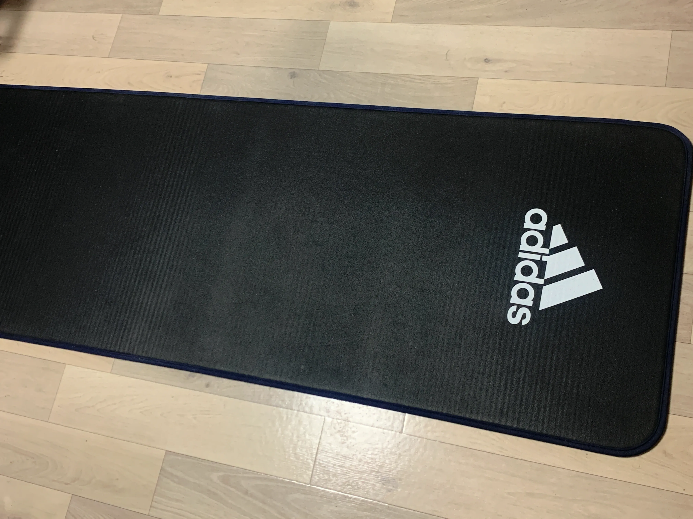
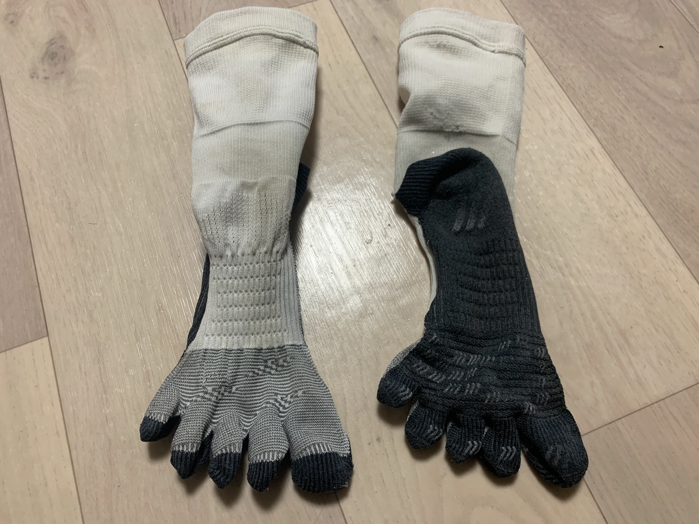
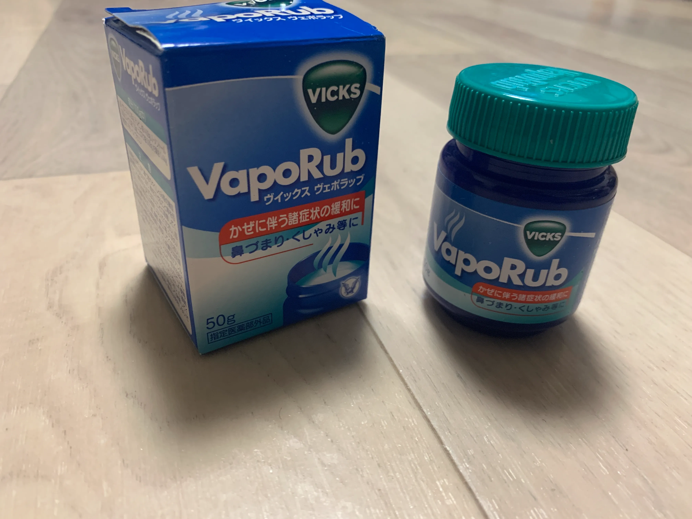

パフォーマンスを高めるグッズ4選！

1. チューブ

＜目的＞
チューブは、体幹やリハビリ、シェイプアップなど、下半身のトレーニングに使用します。
チューブを使うことで、ブレない体幹を身に着け、正確で爆発的な身体操作を可能にします。
＜価格＞
約1,200円
＜利用方法＞
・筋トレや体幹に使う場合：
足首や膝上に巻き、脚を開閉したり、重心移動することで特定の筋肉に負荷をかける。
・ストレッチやリハビリに使う場合：
特に動的ストレッチに有効で、足首や膝上だけでなく手首にも巻き、伸ばしたいところに効くように動作する。
・サッカーのスキルアップ
誰かにボールを投げてもらい、足首や膝上に巻きながら、ボールを蹴る。
↓↓おすすめのチューブトレーニングはこちら↓↓
＜注意点＞
チューブの強度（色）をよく確認してください。
Finoaさんのチューブでは、青＞紫＞黄緑＞ピンクの順で強度が強くなります。
強度の目安は、小学生が黄緑、中学生が紫、高校生以上が青を推奨します。
ピンクはリハビリ用としてお使いください。
2. ヨガマット

＜目的＞
ヨガマットは、筋トレや体幹、ストレッチなど幅広いトレーニングに使うことができます。
硬い床の上ではできないトレーニングをサポートし、関節や背中への負担を軽減します。
また、トレーニングの習慣を身に着けるという意味でも有効です。
＜価格＞
約2,000円
＜利用方法＞
・練習、試合前に使う場合：
動的ストレッチやチューブを使ったウォーミングアップを行う際に使用します。
・練習、試合後に使う場合：
静的ストレッチやリカバリーを行う際に使用します。
・トレーニングとして使う場合：
体幹や自重トレーニングを行う際に使用します。
＜注意点＞
天然ゴム製のマットなど、特定の素材にアレルギーを持つ人には注意が必要です。
3. 高機能ソックス

＜目的＞
高機能ソックスは、足裏のグリップによって足と靴のズレを防ぎます。
パフォーマンス向上だけでなく、怪我の予防にもつながります。
＜価格＞
約2,200円
＜利用方法＞
①セパレートソックスを作成、または購入する。
・普通のサッカーソックスを網目の部分で切る。
・糸がほつれないように、切ったところを火で炙る。
②高機能ソックス、すね当て、セパレートソックスを履く。
↓↓セパレートソックスの作り方はこちら↓↓
＜注意点＞
グリップの利き過ぎが足首や膝などの負担になることがあります。
高機能ソックスのグリップに耐えられるような身体の使い方が身についてから使用することを強くお勧めします。
4. ヴェポラップ

＜目的＞
ヴェポラップは、胸やユニフォームに塗ります。
それを嗅ぐことで鼻の通りを良くし、スプリント後や試合後半に有効です。
＜価格＞
約1,300円
＜効能・効果＞
・鼻づまり、くしゃみ等のかぜに伴う諸症状の緩和。（正式な用途）
・試合や練習前に、胸やユニフォームに塗って呼吸をしやすくする。（サッカーでの用途）
レアルマドリードやアーセナル、ブラジル代表選手などのサッカー選手も使用しています。
・試合や練習後に、マッサージクリームとして使用する。（サッカーでの用途）
手で塗りながらマッサージすることで、有効成分が血行をよくし、リカバリー速度を早めます。
＜注意点＞
ヴェポラップの使用前に、腕などでパッチテストをすることをお勧めします。
また、ヴェポラップを塗った手で目や粘膜に触れた際に強い刺激を感じる場合があります。
5. まとめ
- チューブを使って、体幹や体軸の基礎を作り、安定した身体操作を身に着けよう。
- ヨガマットを使って、筋トレや体幹、ストレッチなどの習慣を作ろう。
- 高機能ソックスを使って、アジリティを高め、フィールドを駆け回ろう。
- ヴェポラップを使って、試合中に乱れた呼吸を整えよう。
このサイトでは、チーム練習と個人練習の2つに分けて、厳選された練習メニューをまとめています。
悪い意味での「伝統的な練習」への疑問。ただボールを蹴るだけの自主練。敗れる理由もわからない無策のチーム。
そんな悩みを解決するためにこのサイトを作り上げました。
蹴練場は日本全国のサッカーファミリーを応援しています。